Erstgespräch
Buche dir das Erstgespräch und starte deinen Markenaufbau.
In unserem gemeinsamen Termin lernen wir uns kennen und sortieren euer Projekt bereits nach sinnvollen Prioritäten. Wir geben einen Ausblick auf die nächsten Schritte.
So geht es für euch los
Im kostenlosen Erstgespräch machen wir bereits eine erste Analyse eurer Markencharakteristik und sprechen relevante Stellschrauben an.
Das finden wir schnell heraus
Ihr lernt uns im Erstgespräch schnell und persönlich kennen und erhaltet einen Eindruck, ob wir miteinander harmonieren.
So geht es konkret weiter
Wir zeigen euch den zeitlichen Ablauf eurer Markenentwicklung auf. So könnt ihr bereits früh und konkret planen.
Euer Angebot kommt schnell
Nach positivem Verlauf des Gesprächs erhaltet ihr innerhalb von 24 Stunden ein passendes Angebot, inklusive Erläuterungsvideo, Referenzen und Projektfahrplan.
Das sagen unsere Kunden
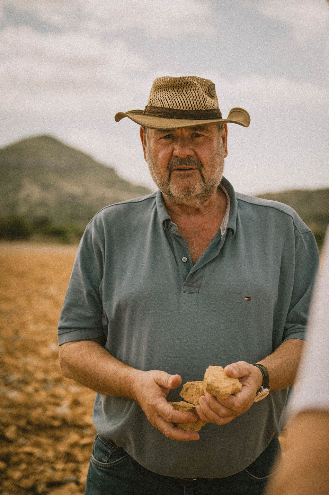
„Im aktuellen Projekt hatten wir 13 Agenturen im Pitch und Concrete hat sich gegen alle behaupten können. Wer Design, Strategie und Umsetzung aus einer Hand sucht, ist hier genau richtig. Ich kann Concrete für alle, die kreatives, fundiertes Brandbuilding suchen, nur empfehlen! In meiner Karriere habe ich mit zahlreichen Agenturen weltweit zusammenarbeiten können, und Concrete ist ganz oben mit dabei. Denn was neben der fachlichen Kompetenz und Erfahrung mindestens genauso wichtig ist, ist das Menschliche, und hier punktet Concrete definitiv. Die Zusammenarbeit war von Anfang an auf Augenhöhe und von gegenseitigem Respekt geprägt. Wolfram und Christian haben sich viel Zeit genommen, unser Unternehmen und die Vision des Gründers zu verstehen und diese kreativ sowie strategisch fundiert in einen Markenkern zu übersetzen. Auch im späteren Verlauf hat uns Concrete mit Flexibilität und Professionalität überzeugt, nicht nur beim Entwickeln der Marke, sondern auch beim Go-to-market. Diese Fähigkeit, sowohl Markenkern als auch komplette Umsetzung zu begleiten, macht Concrete zu einem echten Partner mit langfristigem Mehrwert."
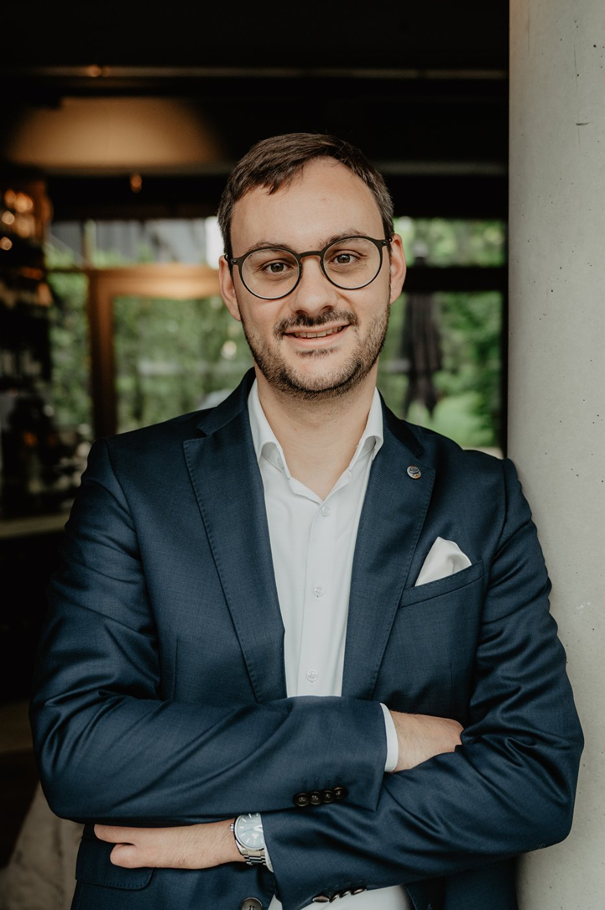
„Die Zusammenarbeit war von Anfang an äußerst angenehm, konstruktiv und auf Augenhöhe. Das Resultat spiegelt unser Unternehmen und unsere Werte optimal wider. Wir als MDB-Finance GmbH möchten uns herzlich bei Concrete für die hervorragende Arbeit an unserem Rebranding und neuen Markenauftritt bedanken. Die Zusammenarbeit war von Anfang an äußerst angenehm, konstruktiv und auf Augenhöhe. Besonders hervorheben möchten wir, dass sehr individuell auf unsere Wünsche und unsere Identität eingegangen wurde. Farben, Motive und Texte waren perfekt aufeinander abgestimmt, und auch in Momenten, in denen wir uns noch nicht zu 100 % wiedergefunden haben, wurde mit viel Geduld und Professionalität so lange weiterentwickelt, bis das Ergebnis genau unseren Vorstellungen entsprach. Das Resultat überzeugt uns nicht nur optisch, sondern spiegelt auch unser Unternehmen und unsere Werte optimal wider. Wir sind rundum zufrieden, sowohl mit dem Prozess als auch mit dem Endergebnis."
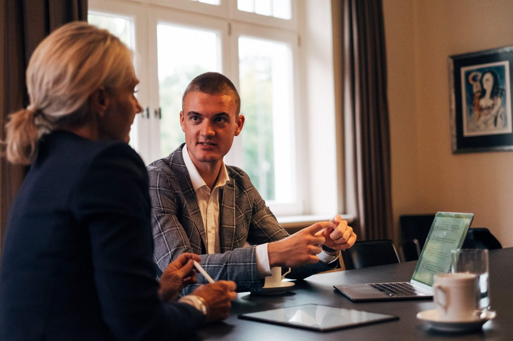
„Neues Branding, neues Level, dank Concrete. Für den nächsten Wachstumsschritt braucht es ein professionelles Rebranding, von Grund auf und bis ins Detail. Neues Branding, neues Level, dank Concrete In der Pre-Seed-Phase haben wir unser ursprüngliches Markenkonzept mit ChatGPT und begrenzter Kreativität selbst aufgesetzt. Funktional, aber mit Luft nach oben. Deshalb war klar: Für den nächsten Wachstumsschritt braucht es ein professionelles Rebranding, von Grund auf und bis ins Detail. Ziel war es, Farben, Schriften, Designelemente, Logo, Website und Print-Materialien vollständig zu überarbeiten oder überhaupt zu entwickeln. Allerdings ohne unsere bestehende Markenidentität komplett zu verlieren. Schon der Projektstart hat uns beeindruckt: Wolfram hatte sofort ein Gespür für unseren Standpunkt, unsere Herausforderungen und unseren Bedarf. Das daraufhin übermittelte Angebot war nicht nur fair und transparent, sondern auch modular aufgebaut. Eine Zusammenarbeit auf Augenhöhe von Anfang an. Der wichtigste Teil folgte direkt danach: Christian hat sich intensiv mit unserem Produkt, unserem Markt und unseren Zielgruppen auseinandergesetzt. Der von uns ausgefüllte Fragebogen diente ihm als Grundlage und das Ergebnis hat uns ehrlich gesagt überrascht: Auf über 30 Seiten Präsi wurden unsere Vorstellungen zur Kundenansprache und Positionierung so klar und präzise formuliert, wie wir es selbst nie geschafft hätten. Es war genau das, was wir immer im Kopf hatten, aber nie richtig ausdrücken konnten. Was die Umsetzung betrifft: Die Zusammenarbeit war schnell, strukturiert und zuverlässig, mit einem klaren Prozess, professionellen Abstimmungen und reibungslosen Korrekturschleifen. Änderungswünsche wurden direkt umgesetzt und das finale Design hat uns auf Anhieb überzeugt: modern, markant und passgenau zu unserem Produkt und unserer Zielgruppe. Hervorzuheben ist auch das hervorragend organisierte Fotoshooting, bei dem sich nicht nur das Design, sondern auch das Storytelling unseres neuen Auftritts konsequent fortgesetzt hat. Auch das Netzwerk von Concrete hat sich als großer Mehrwert erwiesen: Wir konnten auf geprüfte Partner zurückgreifen, mit denen bereits eine Erfolgreiche Zusammenarbeit besteht. Das betrifft Fotografen, Models und Druckereien bei uns in Hamburg. Für uns war der gesamte Prozess angenehm, effizient und inspirierend, mit einem Ergebnis, das unser Team stolz macht. Beginnend bei dem neuen Logo, über unsere neue Homepage und den Visitenkarten + weiteren Print-Materialien. Eine klare Empfehlung: Nicht nur für das Ergebnis, sondern für die Art der Zusammenarbeit."
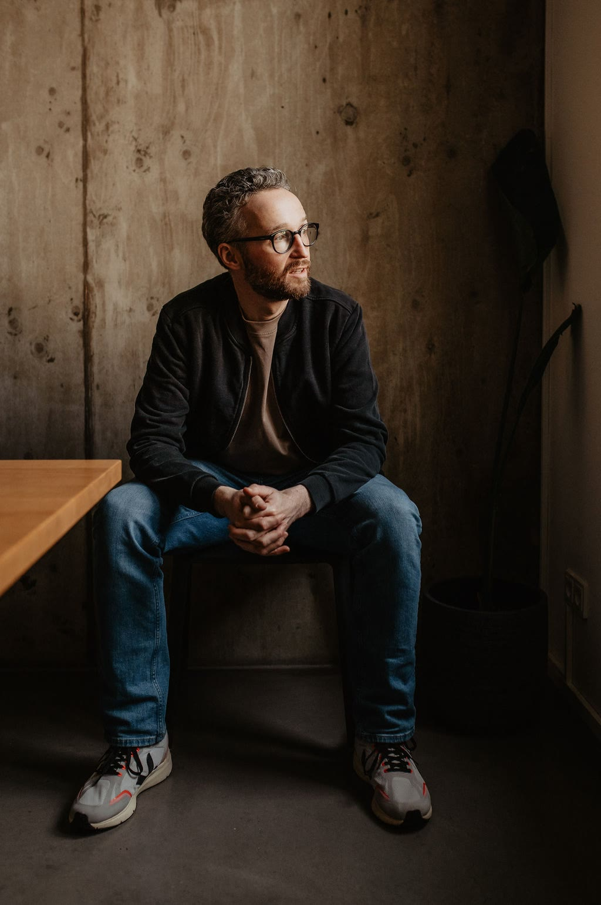
„Klar herausgearbeitete Positionierung, klasse Design, sehr gute Wiedererkennbarkeit. Die Marke und das, was wir tun, wird leicht verstanden. Wir haben mit Concrete eine komplett neue Agenturmarke entwickelt (=> SOLIT Marketing) , um uns strategisch neu auszurichten. Von der ersten Vorbesprechung bis zur Abnahme der Website verlief das Projekt hoch professionell und wir sind mit dem Ergebnis in vielerlei Hinsicht sehr zufrieden. Klar herausgearbeitete Positionierung, klasse Design, sehr gute Wiedererkennbarkeit und Differenzierung von Wettbewerbern. Die Marke und das was wir tun wird von Kundinnen und Kunden leicht verstanden. Wir sind extrem zufrieden."
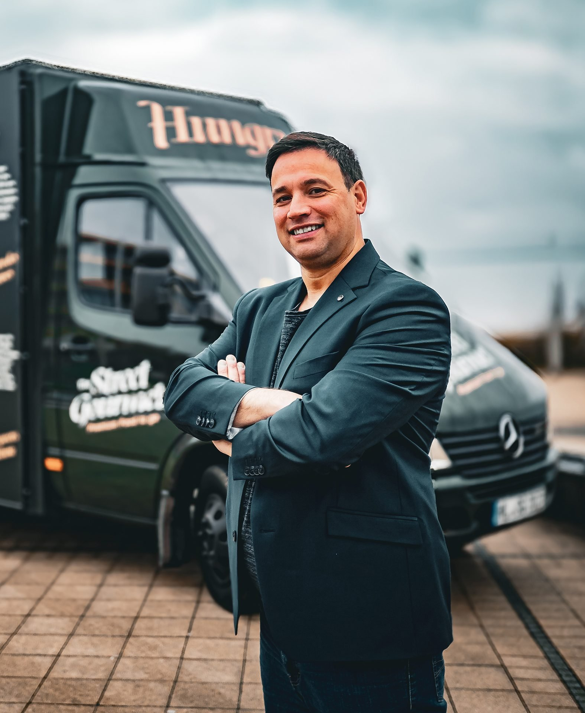
„Ihr habt mir eine klare Richtung aufgezeigt und genau verstanden, worauf es in meiner Branche ankommt. Alles fühlt sich rund an und passt einfach. Lieber Wolle, von Anfang an hab ich mich bei euch gut aufgehoben gefühlt. Ich hatte viele Fragen und war mir in einigen Punkten unsicher, aber ihr habt mir eine klare Richtung aufgezeigt und genau verstanden, worauf es in meiner Branche ankommt. Das Markendesign, die Fotos, die Website, alles fühlt sich rund an und passt einfach. Ich freu mich riesig, wenn meine Trucks bald mit dem neuen Look unterwegs sind! Danke dir und dem ganzen Concrete-Team für die starke Arbeit!"
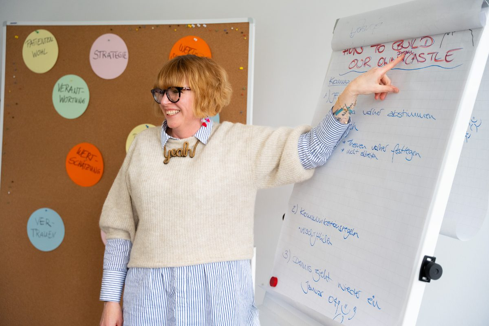
„Das Team versteht sofort, worauf es uns ankommt. Durchdachte Designideen, inklusive Erklärungen, warum welcher Stil gut zu uns passt. Wir arbeiten seit Kurzem mit concrete brandbuilding zusammen und sind begeistert von der Zusammenarbeit! Gemeinsam haben wir Icons für unsere neue Mitarbeiterkleidung entwickelt, und gleich zu Beginn war klar: Das Team versteht sofort, worauf es uns ankommt. Schon kurz nach dem ersten Austausch haben wir ein passendes Angebot erhalten, das sogar per Video nochmal anschaulich erklärt wurde. In unserem ersten Call zur Feinabstimmung wurden uns durchdachte Designideen vorgestellt, inklusive Erklärungen, warum welcher Stil oder Ansatz gut zu uns passt. Nach unserer internen Entscheidung zum finalen Stil kamen die finalen Entwürfe innerhalb kürzester Zeit, schnell, professionell und absolut hochwertig. Besonders schätzen wir, dass das Team jederzeit offen für unsere Ideen und Anmerkungen war. Das Ergebnis kann sich sehen lassen, und wir freuen uns sehr, nun schon das zweite Projekt gemeinsam zu starten! Vielen Dank für die tolle Zusammenarbeit, absolut empfehlenswert!"
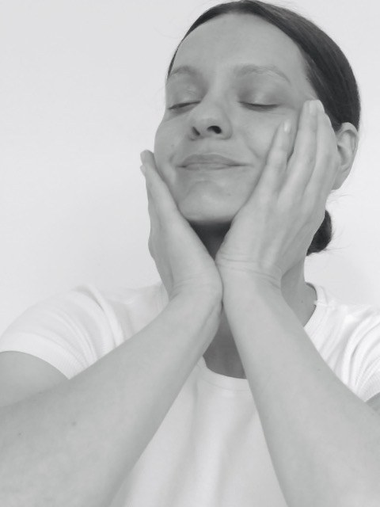
„Was wir bei Concrete Brandbuilding bekommen haben, hat unsere Erwartungen bei Weitem übertroffen. Wir sind ein KI-basiertes Pre-Seed-Startup im Beauty-Tech-Bereich. Mit unseren ersten Fördermitteln haben wir uns auf die Suche nach einer Agentur für unser Basis-Branding gemacht, wir dachten an Logo, Typografie, Farbwelt. Was wir bei Concrete Brandbuilding bekommen haben, hat unsere Erwartungen bei Weitem übertroffen: • Ein Signet, das den Kern unserer Idee perfekt visualisiert • Eine Typografie und Farbwelt, die eigenständig wirken und unsere Marke sofort erkennbar machen • Eine durchdachte Designwelt mit vielseitigen Elementen, die ein stimmiges Gesamtbild schafft, eine Guideline für Pitch-Decks, Social Media, interne & externe Kommunikation • Eine KI-gestützte Brandingstrategie, die in wenigen Tagen stand und wirklich funktioniert plus Weiterentwicklung unserer Markenidentität, die uns strategisch nach vorne bringt. • Eine handgefertigte 3D-Grafik mit herausgelösten Design-Assets für vielseitige Nutzung • On Top: Weiterentwicklung unseres Markennamens Die Zusammenarbeit war mit das professionellste, was ich bisher erlebt habe: klare Kommunikation, ein großartiges Miteinander und unfassbar schnelle Sprints. Es war jedes Mal eine Freude, eine neue Mail von euch zu öffnen. Ich habe mich und unsere Startup-Idee jederzeit verstanden gefühlt, und alles, was ich eingebracht habe, wurde wertschätzend integriert. Dabei haben wir ein maßgeschneidertes Lean-Angebot erhalten: Wir konnten unsere bereits geleistete strategische Vorarbeit optimal einbringen, und Concrete hat durch exzellente Vorbereitung die Workshops effizient reduziert. So haben wir ein Budget erhalten, das unseren begrenzten Fördermitteln entgegenkam. Gerade in der frühen Startup-Phase braucht man Partner, die flexibel, effizient und visionär arbeiten, genau das bietet Concrete Brandbuilding. Ihr Branding hat meine Arbeitsweise nachhaltig auf ein neues level gebracht: Wenn ich heute Pitch-Decks, Social Media Posts oder Geschäfts-Kommunikation erstelle, bin ich inspiriert und beflügelt durch das Design, das Concrete für uns geschaffen hat. Herzlichen Dank an euch und das ganze Team! Ihr habt unsere Idee ins Leben visualisiert. Von Vision zu Visual Identity in Rekordzeit, Concrete Brandbuilding, das war next level! Wir freuen uns auf alles, was kommt. Große Empfehlung -- herzlichen Gruß, Dr. Martyna Daria Klein"
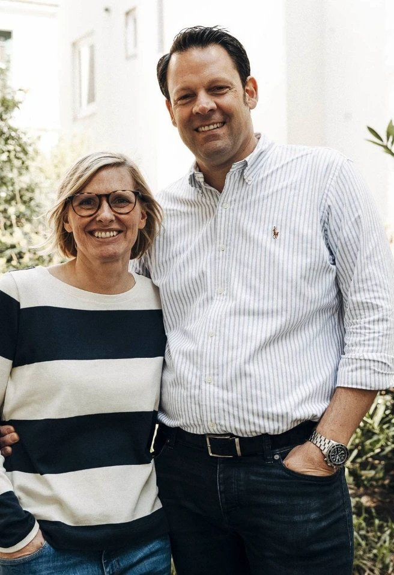
„Tolles und kreatives Team, freundschaftliches Verhältnis und ein absolut hohes Verständnis für ihre Kunden und deren Produkte. Wir haben wahnsinnig gute Erfahrungen mit Concrete gemacht. Mit einer anfänglichen Idee erweckt Concrete es zum Leben und gibt ihr eine absolute Persönlichkeit. Es macht einfach großen Spaß mit Euch!"
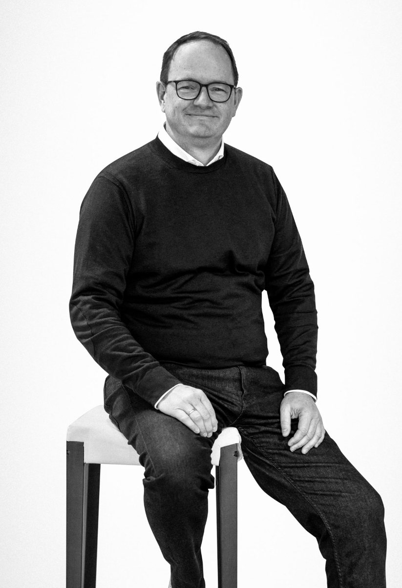
„Die Zusammenarbeit mit Euch war von Anfang bis Ende inspirierend und professionell. Ihr habt es geschafft, unsere neue Marke NextBed mit kreativen Ideen und einer klaren Strategie perfekt zum Leben zu erwecken. Wir sind mit dem Ergebnis mehr als zufrieden und können Concrete uneingeschränkt weiterempfehlen."
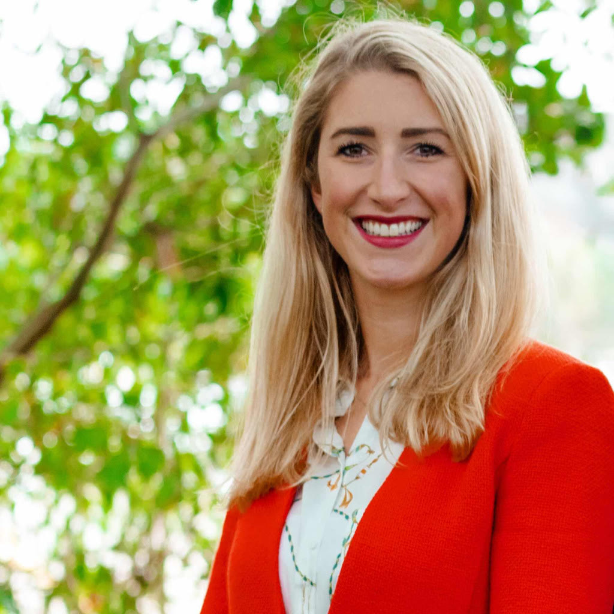
„Super Team! Das Team war sehr geduldig mit uns, der Austausch stets flexibel und zielführend. Super Team! Das Team hat für unser Startup ein Logo entwickelt. Wir sind mit dem Ergebnis 100% zufrieden. Die beiden waren sehr geduldig mit uns und der Austausch war stets flexibel und zielführend. Concrete ist eine Agentur, die ich definitiv weiterempfehlen würde. Danke! Liebe Grüße, Anke"
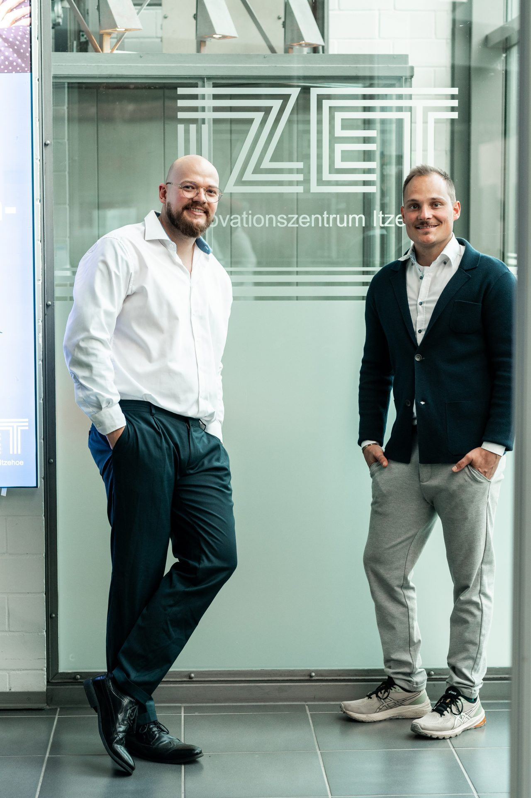
„Als junges Unternehmen war Geschwindigkeit für uns entscheidend. CONCRETE hat ein Angebot ausgearbeitet, das genau das ermöglicht: strukturiert, zielgerichtet und ohne Abstriche bei der Qualität. Die Zusammenarbeit mit CONCRETE ist absolut zu empfehlen. Offene Kommunikation, Transparenz und ehrliches Feedback sind genau das, was wir uns von einem Partner gewünscht haben, und genau das haben wir bekommen. Da wir zuvor noch nie eine eigene Marke aufgebaut hatten, war die Zusammenarbeit für uns auch ein echter Lernprozess. Der wichtigste Take-away: Eine Marke ist weit mehr als ein Logo und ein paar Farben. Sie ist vor allem ein Gefühl, das transportiert wird. Der Prozess war von Anfang an durchdacht: Aus einem Fragebogen zu Geschäftsmodell, Kunden und Wettbewerb hat CONCRETE unsere Markenidentität entwickelt, im Design-Kickoff ging es dann explizit um Emotionen. Wie präzise unsere Vorstellungen getroffen und wie facettenreich das Ganze ausgearbeitet wurde, hat uns sehr gefreut. Auch bei Website und Bildentwicklung wurde eng mit uns kommuniziert, nichts ohne Rücksprache und Freigabe umgesetzt."
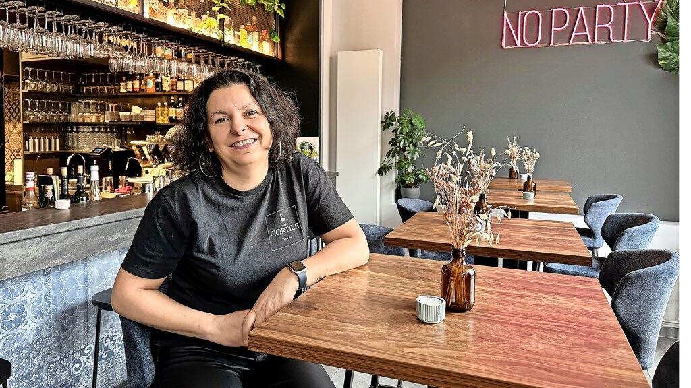
„Besonders schätzen wir, wie viel Struktur sie in unsere Gedanken- und Ideenwelt gebracht haben. Wir haben bei CONCRETE ein Gesamtpaket bekommen. Das Team von CONCRETE hört zu, versteht einen wirklich und die Zusammenarbeit macht durchgehend Freude. Nachdem wir mehrere Agenturen in Hamburg im Pitch hatten, sind wir bei CONCRETE gelandet und wussten ziemlich schnell, dass wir dort richtig sind. Noch bevor wir uns final entschieden hatten, hat Wolfram uns in einem ausführlichen, aufgezeichneten Video transparent erklärt, welche Schritte realistisch anstehen, wie lange einzelne Phasen dauern und mit welchen Kosten wir rechnen müssen. Genau diese Offenheit war für uns entscheidend. Zum Start gab es Workshops zu Strategie, Zielgruppen und Marktpositionierung, darauf aufbauend wurden Logo, Look, Claim und die gesamte visuelle Welt gemeinsam entwickelt: Logo-Entwicklung, Farbwelt, Corporate Design, Website-Konzept, Präsentationsmaster, Farbauswahl für den Ladenbau, Fotomaterial für die Orderterminals. Wir bauen ein emotionales Produkt in einer schnellen Großstadt wie Hamburg auf, und genau dieses Gefühl hat die Agentur verstanden und in unserer Marke sichtbar gemacht."
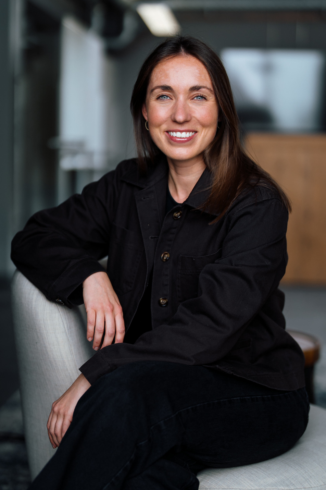
„Aus einer bestehenden Seite wurde ein hochwertiger Markenauftritt mit klarer Struktur, starkem Design und spielerischen Animationen. Trotz des engen Timings wurden alle Deadlines eingehalten. Ich kann CONCRETE von Herzen weiterempfehlen. Wir von goodBytz standen kurz vor einem wichtigen Launch und haben sehr kurzfristig nach einer Agentur gesucht, die unsere Website innerhalb von nur drei Wochen nicht nur technisch überarbeitet, sondern auch gestalterisch auf ein neues Level hebt. Gemeinsam mit Wolfram und seinem Team ist genau das gelungen. Besonders beeindruckt hat uns die Verlässlichkeit im gesamten Prozess: Alle Deadlines wurden eingehalten und gleichzeitig wurde individuell auf unsere Wünsche eingegangen. Wir sind mit dem Endergebnis wirklich sehr zufrieden und freuen uns darauf, auch in Zukunft weitere Projekte gemeinsam umzusetzen."